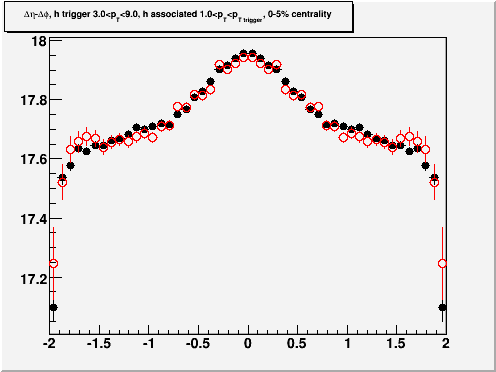
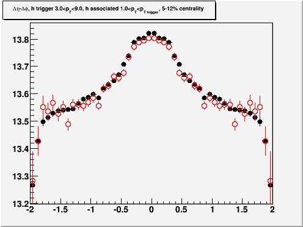
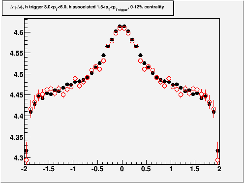
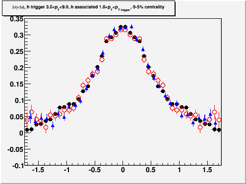

1) Could you show the two centralities
(0-5% and 5-10% of the ZDC data) separately? I suspect the effect may
be larger in the more central data.
2) Since both event mixing technique (z_vertex and centrality summing)
have an effect of the right direction, could you do both
simultaneously? You already have the data from the narrow z_vertex run.
3) Could you compare your default result and the result from 2) to
Pawan's deta correlation? (You had the former on the web page before
but was replaced by plots from the new checks.)
To reduce the total number of
plots we have to produce, we focused on cuts to match Pawan's analysis,
pT trig 3-9, pT assoc 1-3, |dphi| < 0.65
| 0-5%
Red: |vtx z| <2.5
cm Black: |vtx z|
<30.0 cm
|
5-12%
Red: |vtx z| <2.5
cm Black: |vtx z|
<30.0 cm
|
0-12%
Red: |vtx z| <2.5
cm Black: |vtx z|
<30.0 cm, mixing done in one 0-12% bin
|
0-12%
Red: |vtx z| <2.5
cm Black: |vtx z|
<30.0 cm, mixing done in one 0-5% and 5-12% bins Blue: Pawan's analysis from the
3-particle correlation paper
|

|

|

|

|
Note that for small deta the track
merge corrected data are matched to the rest of the data.
Statistical fluctuations caused by reduced statistics can lead to the
uncorrected histogram being matched to the corrected histogram in a
slightly different place. The larger error statistical in Pawan's analysis
are likely due to limited statistics in the mixed events. We think the
differences in all plots for |deta|<1.78 are consistent with
statistical fluctuations.
To attempt to move beyond our
disagreement over whether or not there is any real difference
between the red, blue, and black points, we propose considering any
differences between the multiple different ways of determining the
mixed events to be a systematic error. The table below compares
the fit parameters of a Gaussian plus a constant offset for
|deta|<1.75 for the three histograms in the last plot. In
addition we compare to a fit with |deta|<1.65.
|
Standard
|
Tight vertex
|
Pawan's analysis
|
Fit restricted to |deta|<1.65
|
offset
|
0.042 +/- 0.003 |
0.040 +/- 0.007 |
0.042 +/- 0.004 |
0.044 +/- 0.003 |
width
|
0.458 +/- 0.007 |
0.469 +/- 0.017
|
0.439 +/- 0.010 |
0.452 +/- 0.007 |
yield
|
0.320 +/- 0.007 |
0.322 +/- 0.017 |
0.318 +/- 0.010 |
0.314 +/- 0.007 |
The largest difference between
yields is between the fit restricted to |deta|<1.65 and this
analysis with a tight cut on the vertex z position. There is a 2%
difference in the yields between these two values. The largest
difference between the widths is between the standard analysis and
Pawan's analysis, a 4% difference. We think this the most
difficult region to extract the yield and the width because it is the
central Au+Au 200, with the largest background. We note that even
if we did spend several months refining the mixed event technique, the
62 GeV data would still require a large centrality bin and likely
looser cuts on the vertex z position due to the limited
statistics. We therefore believe that such an effort would not be
worth it because it would not lead to a more accurate measurement.
We have added statements about the systematic errors to section IIF.
4) Why is the deta raw correlation pedestal at ~4.45?
Fig.4: the pedestal is ~7.05 (by the way the dphi range is not
specified in the caption).
This was my mistake. About a
year ago, we decided to use |dphi|<0.78 to match the ridge paper; I
had been using a cutoff of roughly 1. The difference in the
background levels is roughly the 0.78. We were not originally
planning on having this figure in this paper - we were hoping the PID
paper would get out first and then the track merging correction would
go into that paper. When it became clear that this paper would
come out first, Jana moved the track merging section to this paper and
I overlooked updating this plot.
Thank you for catching this.
The figure is updated.
Fig.5: it is ~5.3.
From Fig.6 the dphi correlation background of11.2, I'd expect the deta
background to be ~11.2*2*0.78(dphi range)*2(deta acceptance correction)
/ 4(deta range)~8.7.
I vaguely remember we looked at this before and concluded things were
consistent, but I don't remember the reasoning. Let's go over these
numbers again to understand.
Your estimate is off by a factor
of two. This is already acceptance corrected. Plus the deta
range projected here is 1.78. 11.4, the middle of the v2
modulated background, is a better estimate of the background
level. This gives a number closer to 5. And the deta
projection has the ridge in it too.
We have added the dphi range to
the figure caption.
P.S. The deta axis ranges are all different in Fig.4,5,7. Suggest to
keep them the same.
We have set them all at 1.7
now. Thank you for catching that our style was not 100%
consistent.
{kind=link}
{kind=link}
{kind=link}
{kind=link}